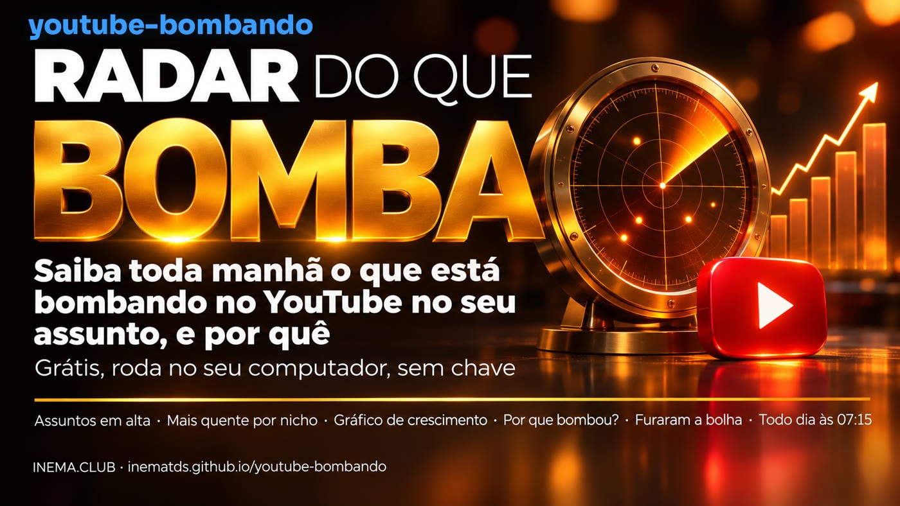
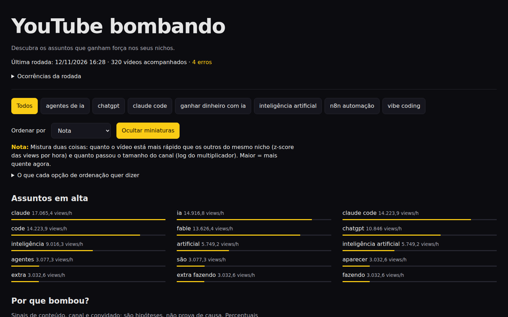
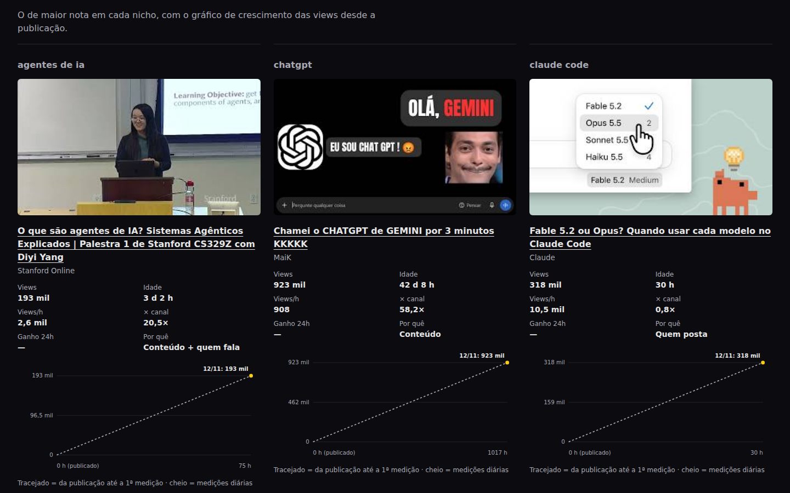
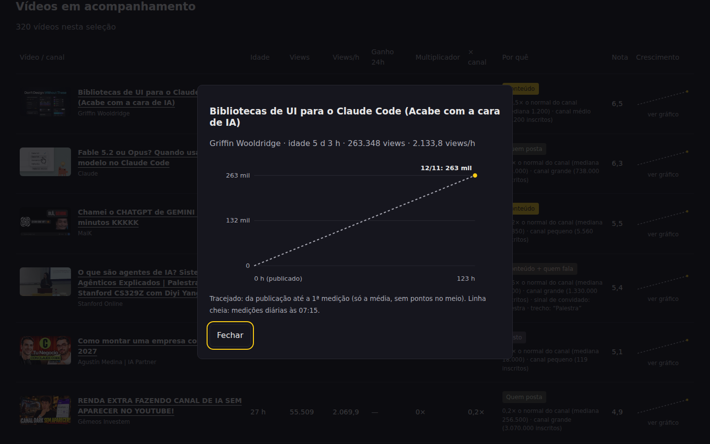
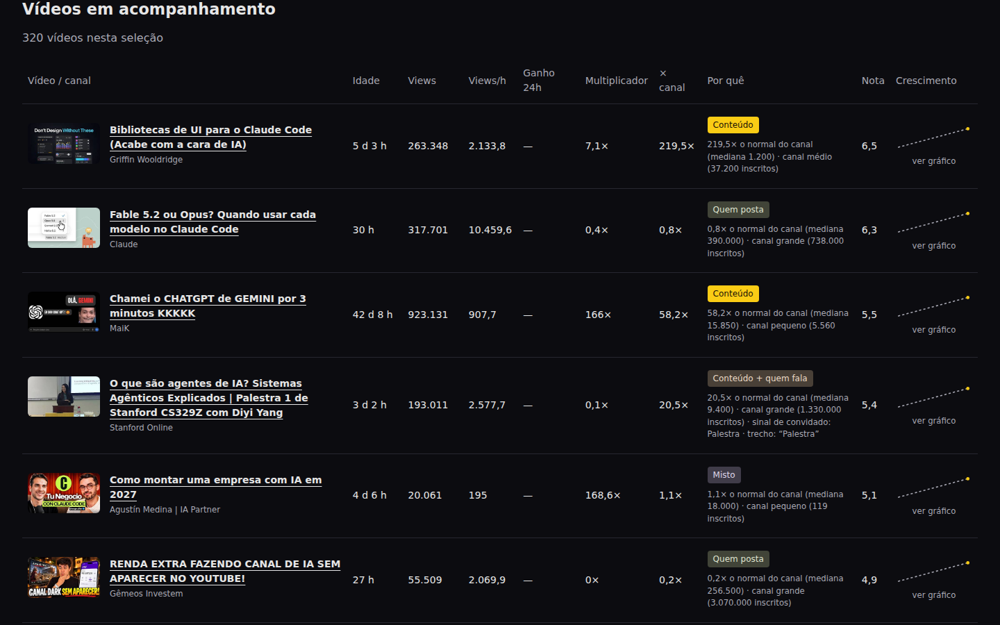

Você grava, capricha, e o vídeo não sai do lugar. Enquanto isso, um canal pequeno no mesmo assunto faz centenas de vezes o normal dele. O radar do que bomba mostra, antes de você gravar, o que está crescendo e se cresceu pelo assunto (dá para aproveitar a ideia) ou só porque o canal é grande (não dá).

O youtube-bombando é um pequeno sistema que roda sozinho no seu computador, toda manhã. Ele procura no YouTube os vídeos da semana nos assuntos que você escolher, anota as views de cada um por 7 dias e monta um painel com o que está crescendo mais rápido. Para cada vídeo, ele compara as views com o normal do próprio canal e diz se o sinal é de conteúdo, de quem posta (canal grande) ou de quem fala (convidado). É para quem grava vídeo ou quer começar um canal. Precisa só de Python e de uma ferramenta grátis que lê o YouTube; não usa chave nem API paga.
Às 07:15 a coleta termina e o painel se atualiza sozinho. Você escolhe o assunto no topo e a ordem dos vídeos; cada opção de ordem vem explicada embaixo do seletor.




| Ordenar por | O que quer dizer |
|---|---|
| Nota | O mais quente agora: quanto o vídeo cresce mais rápido que os outros do mesmo assunto, somado a quanto ele passou o tamanho do canal. |
| Velocidade | Views por hora desde a publicação. Favorece os vídeos novos. |
| Ganho em 24h | Views ganhas desde a medição do dia anterior (aparece a partir do 2º dia de coleta). |
| Multiplicador | Views ÷ inscritos. Acima de 1× o vídeo alcançou mais gente do que o canal tem de inscritos. |
| × canal | Views ÷ o normal dos últimos vídeos do próprio canal. 3× ou mais = furou a bolha do canal. |
| Views | Total de views, sem olhar idade nem tamanho do canal. |
| Mais novos | Os publicados há menos tempo primeiro. |
Um vídeo com 1 milhão de views num canal de 5 milhões de inscritos não ensina nada: a audiência já estava lá. O mesmo milhão num canal de 7 mil inscritos ensina muito. Por isso o painel compara cada vídeo com o normal do próprio canal (a mediana dos últimos vídeos dele).
Fez 3 vezes ou mais o normal do canal. O assunto puxou. É a ideia que vale estudar e fazer do seu jeito.
Canal grande (mais de 500 mil inscritos) no ritmo de sempre. A audiência já existia; copiar o tema não traz o mesmo resultado.
Tem convidado (entrevista, podcast, palestra ou nome conhecido) e passou de 1,5× o normal. A pessoa puxou.
É um sinal, não uma prova de causa: são contas simples (views ÷ normal do canal), sem IA. Quando o canal ainda não tem linha de base, o vídeo fica em “Sem dados”, nunca no chute.
320 vídeos em 7 assuntos (inteligência artificial, n8n, claude code, agentes de IA, vibe coding, ganhar dinheiro com IA, chatgpt).
das views vieram de vídeos que fizeram 3× ou mais o normal do próprio canal.
das views foram de canais grandes no ritmo normal (quem posta). No assunto “inteligência artificial”, 31%.
o maior salto do dia: um canal pequeno fez 810 vezes o seu normal. Um curso de 5 horas num canal de ~7 mil inscritos fez 513×.
Esses números mudam todo dia; o painel mostra os de hoje.
Daqui para baixo é a parte técnica: instalar, escolher os assuntos e deixar rodando todo dia. Você não precisa desta parte para entender o que está acima.
Usa o yt-dlp (ferramenta aberta e grátis) para buscar os vídeos da semana de cada assunto e ler as views, como um navegador faria. Pausa entre chamadas e teto por rodada.
Uma foto por vídeo por dia num banco SQLite local: velocidade, ganho em 24h, multiplicador, × canal e a nota. Tudo explicado no README.
Um único index.html que abre em qualquer navegador, servido na porta 8795. Também pode aparecer dentro de outro painel (o INEMA mostra num card “Tendências de rede”).
Cada vídeo é acompanhado por 7 dias desde que foi achado. A linha de base de cada canal (últimos 20 vídeos) fica guardada 7 dias. A primeira coleta completa levou cerca de 20 minutos.
Nenhuma chave, nenhum pacote Python extra. O horário automático usa o systemd do Linux; no Mac e no Windows você roda a coleta à mão (ou pelo agendador do sistema).
python3 --versionInstale e mantenha atualizado (o YouTube muda e o yt-dlp acompanha).
python3 -m pip install -U yt-dlp yt-dlp --version
Sem git: baixe o ZIP.
git clone https://github.com/inematds/youtube-bombando cd youtube-bombando
Os testes e uma rodada com dados de exemplo, sem tocar no YouTube. O painel de teste vai para dados/teste/painel/.
python3 -m unittest discover -s tests python3 bombando/rodada.py --fixtures tests/fixtures # abra dados/teste/painel/index.html no navegador
Edite config.json. Cada assunto tem um nome, o termo de busca e se está ativo.
{ "nome": "receitas fáceis", "busca": "receita fácil", "ativo": true }
Pode levar de alguns minutos a meia hora, conforme o número de assuntos. Para um assunto só, use --nicho.
python3 bombando/rodada.py python3 bombando/rodada.py --nicho 'receitas fáceis'
O painel é um arquivo só. Abra direto ou sirva na porta 8795.
python3 -m http.server 8795 --directory painel # http://localhost:8795
Instala o horário das 07:15 e o servidor do painel como serviços do seu usuário. Pode repetir sem problema.
bash deploy/instalar.sh systemctl --user list-timers youtube-bombando.timer
Sem coletar nada, por exemplo depois de mudar algo no visual.
python3 bombando/rodada.py --so-painel